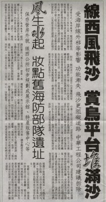

看完我們的介紹，線西海濱是不是很不錯呢？但如同我們的標題形容它是「滄海遺珠」，雖有良好的海濱，天然的美景，卻沒能成為知名的觀光景點，吸引很多人來前往。
其中原因當然很多，線西為農漁業鄉鎮，因產業變化，人口外流，於是政府在海濱一帶設置工業區來發展當地產業，也是對環境的衝擊之一，還有居民大量在岸邊養蚵，和候鳥的棲息地也有衝突，加上未有良好規劃，交通不夠便捷…等因素，所以這裡還不足成為非常理想的觀光景點。所以我們透過訪問當地居民，外來遊客、剪報資料，最後訪問鄉長，期待規畫出線西海濱成為新天堂樂園。
